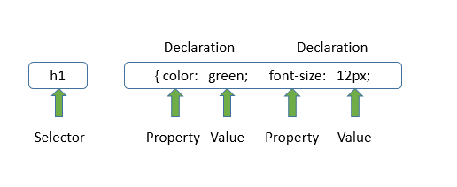

| CSS Tutorial |
|---|
| Introduction |
| Inline Approach |
| Internal Approach |
| External Approach |
| CSS Selectors |
| CSS Colors |
| CSS Background |
| CSS Borders |
| CSS Margins |
| CSS Paddings |
| CSS Fonts |
| CSS Links |
| CSS Quiz |
To develop any website we require three major technologies HTML,CSS,Javascript.The HTML Language is just to provide the structure of the webpage and some basic styles to display content on the webpage. We use CSS to override the default styles of HTML and apply various extra styles like padding,margin,color,transformation and animations.
CSS describes how to present the data on the webapage with user defined styles.First with the HTML we will define the structure and by using CSS we will select each HTML element and apply styles to it.
We can use the CSS with a HTML in three ways,